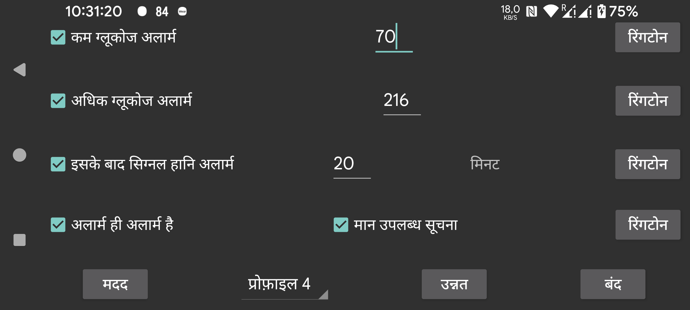

ब्लूटूथ के माध्यम से प्राप्त स्ट्रीम मानों का उपयोग कम और अधिक ग्लूकोज अलार्म सेट करने के लिए किया जा सकता है।
वह मान जिस पर और उससे नीचे एक अलार्म बजना चाहिए।
वह मान जिस पर और उससे ऊपर एक अलार्म बजना चाहिए।
निर्दिष्ट करें कि यदि ब्लूटूथ के माध्यम से कोई ग्लूकोज मान प्राप्त नहीं होता है तो कितने मिनट बाद एक अलार्म बजना चाहिए।
जब निम्नलिखित में से कोई एक शर्त पूरी होती है तो अलार्म रुक जाएंगे:
- निर्दिष्ट अवधि बीत गई है;
- वक्र दृश्य को छुआ गया है;
- Juggluco की Android सूचना को छुआ गया है (अनलॉक अवस्था में);
- Juggluco में अलार्म सूचना का रद्द करें बटन छुआ गया है;
- फ्लोटिंग ग्लूकोज को छुआ गया है।
कभी-कभी सेंसर काम नहीं करता। जब आप इसे चालू करते हैं, तो आपको सूचित किया जाएगा जब सेंसर फिर से काम करता है, पर केवल तब जब आपने देखा है कि मान Juggluco ऐप में ही अनुपस्थित है। जब आप केवल Juggluco की सूचना या इसके वॉच फेस के कारण जानते हैं कि मान अनुपस्थित था, तो मान उपलब्ध सूचना सक्रिय नहीं होगी।
प्रत्येक अलार्म के लिए आप निर्दिष्ट कर सकते हैं कि कौन सी रिंगटोन बजानी है और कितने समय के लिए।
जब “अलार्म ही अलार्म है” चेक किया जाता है, तो कम, अधिक और सिग्नल हानि अलार्म के लिए बजाई जाने वाली रिंगटोन को Alarms ध्वनि श्रेणी दी जाती है। इसका मतलब है कि Android सेटिंग्स में, इसका वॉल्यूम अलार्म वॉल्यूम लीवर से प्रबंधित होता है और यह तब शांत नहीं होता जब पूरे फोन की ध्वनि बंद हो या कंपन पर सेट हो। जब अलार्म ही अलार्म है चेक नहीं किया जाता, तो फोन पर सूचना वॉल्यूम लीवर और Samsung Galaxy Watch 4-7 पर सिस्टम लीवर का उपयोग किया जाता है। यह मान उपलब्ध सूचना के लिए हमेशा लागू होता है।
निर्दिष्ट करें कि ये सेटिंग्स किस प्रोफ़ाइल के लिए हैं। इस तरह आप अलार्म और बोलने की सेटिंग्स के बीच बदल सकते हैं। आप उन्नत → अनुसूची के तहत एक निश्चित समय पर स्वचालित रूप से चालू होने के लिए एक प्रोफ़ाइल निर्दिष्ट कर सकते हैं।
उन्नत अलार्म वाला मेन्यू: बहुत कम, बहुत अधिक, जल्द ही कम, जल्द ही अधिक और आप निश्चित समय पर सक्रिय होने के लिए प्रोफ़ाइल अनुसूचित कर सकते हैं।